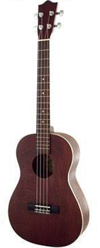
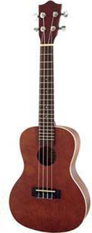
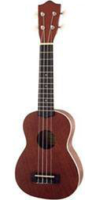

Jewkulele.com
The Hebrew Ukulele Site
בריטון

- אורך: 76 ס"מ
- כיוון נפוץ: DGBE
- מספר סריגים: 19+
- יתרונות:
- טווח נגינה רחב
- אפשרות לנגן צלילים נמוכים יותר
- חסרונות:
- דומה מדי לגיטרה בעלת 4 מיתרים
- ניידות
טנור

- אורך: 66 ס"מ
- כיוון נפוץ: GCEA
- מספר סריגים: 15+
- יתרונות:
- טווח נגינה רחב
- טוב להופעות
- חסרונות:
- צליל מעט שונה מהיוקוללה הקלאסי
- פחות נייד באופן יחסי
קונצרט

- אורך: 58.5 ס"מ
- כיוון נפוץ: GCEA
- מספר סריגים: 15-20
- יתרונות:
- טווח נגינה רחב יותר מהסופרנו אבל שומר על הסאונד הקלאסי
- נוח לטיולים
- חסרונות:
סופרנו

- אורך: 53.5 ס"מ
- כיוון נפוץ: GCEA
- מספר סריגים: 12-15
- יתרונות:
- כמו גור כלבים שאף פעם לא גדל
- נוח מאוד לטיולים
- חסרונות:
- טווח נגינה מוגבל מאוד
- לא ידידותי לאנשים בעלי אצבעות עבות